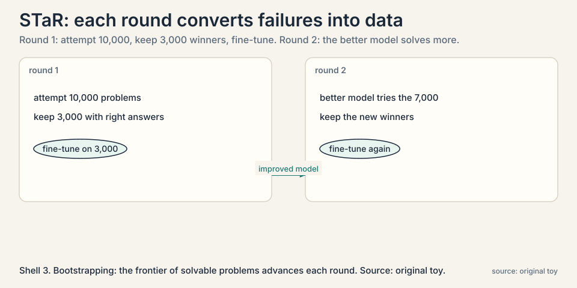
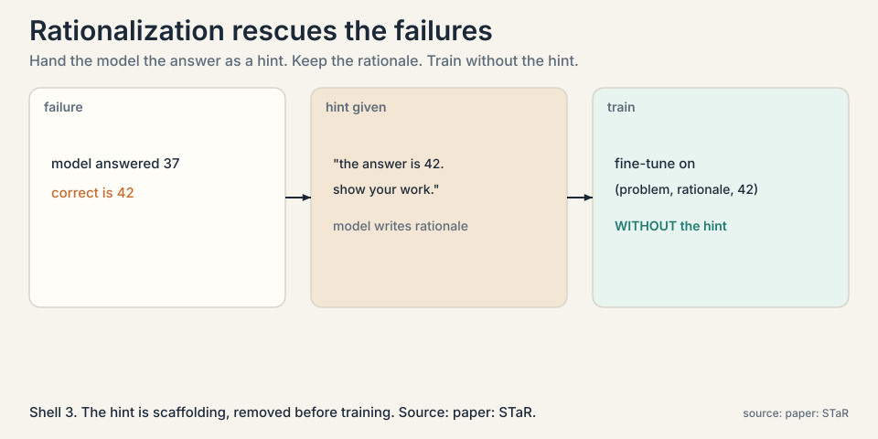
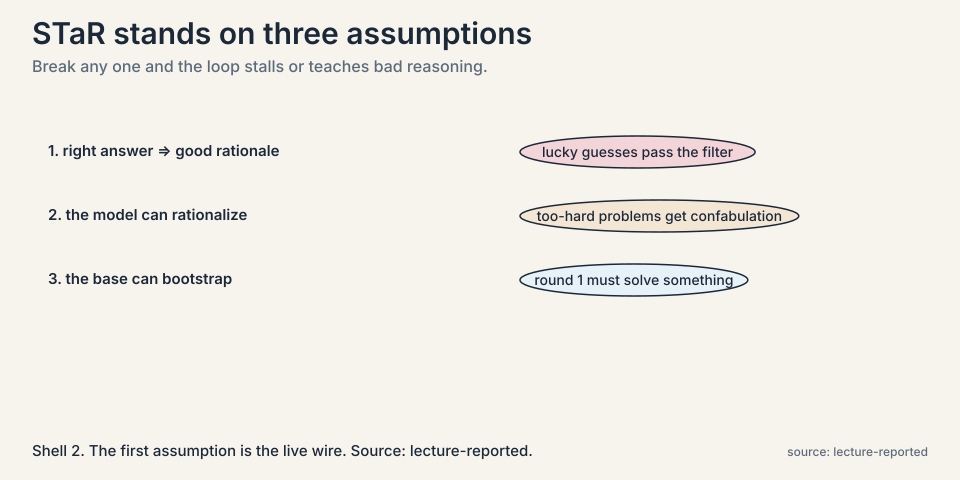
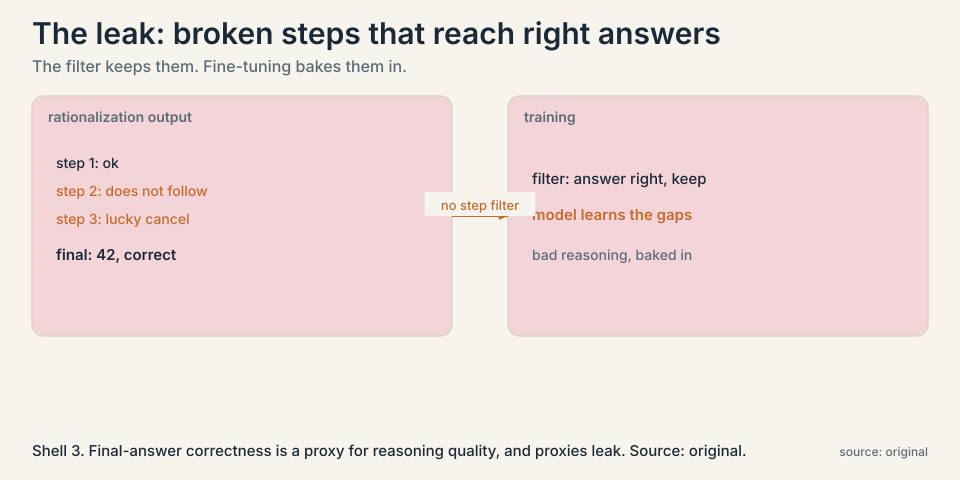
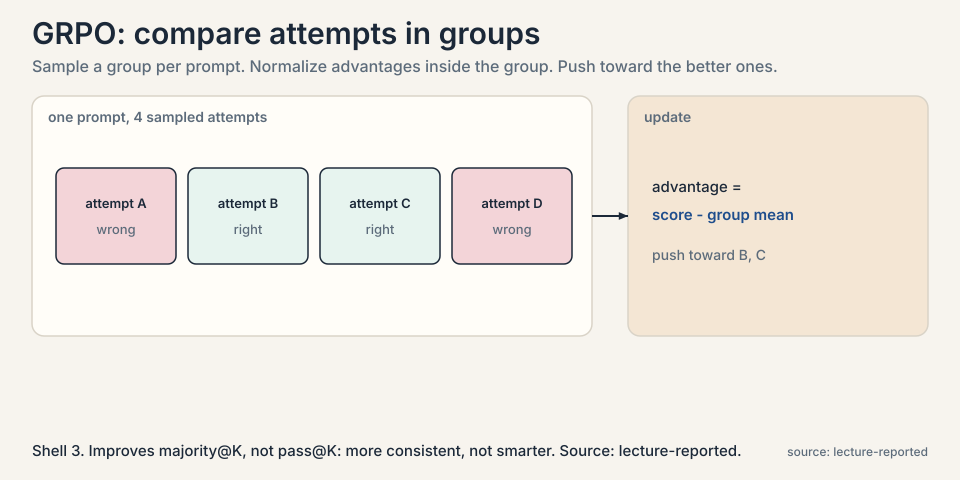

Lecture 8: Teaching the Model to Reason: STaR
Video blocked (ad-blocker or local file mode).
Watch on YouTubeVideo not loading? Watch on YouTube
Aakanksha Chowdhery on STaR (rejection sampling plus rationalization), DeepSeekMath and GRPO, and DAPO (dynamic sampling, asymmetric clipping).
The problem: nobody wrote down how to think
Lecture 2 found answers by sampling. But the model never learned: every question paid the sampling bill again. To move answers from the tail into the first try, the model must train on reasoning itself. Here is the blocker: the internet has almost no step-by-step reasoning traces at scale. Human annotation is slow and expensive. Prompting with a few examples underperforms training on large data. The data the loop needs does not exist.
Subchapter: the missing dataset
Think about what training needs: thousands of problems, each with a worked solution, step by step. The internet has answers without workings, textbooks with workings but at small scale, and forums with workings of uneven quality. Nobody wrote down how to think at the scale training needs. Human annotation could fill the gap, but slowly and expensively, and the lectures’ whole bet is that the loop can manufacture its own supervision instead.
The key question
What if the model could manufacture its own reasoning data, using known answers to sort its own attempts into good and bad?
The loop, worked on a toy
STaR (Self-Taught Reasoner) is the answer. Start with two datasets. A small prompt set: a few problems with human-written rationales, the worked examples. A large training set: many problems with questions and correct answers, but no rationales. Say 10,000 problems. The loop:
round 1: few-shot prompt the model with the prompt set's rationales model attempts all 10,000 problems, writing rationales keep the 3,000 with correct answers -> new training data fine-tune the model on those 3,000 round 2: the better model attempts the 7,000 it missed keep the new winners, fine-tune again ...
Each round converts some failures into training data, and the improved model converts more next round. That is the bootstrapping: the model pulls itself up, with the correct answers as the only outside supervision.

Subchapter: why it is called off-policy RL
The lecture calls STaR a bare-bones off-policy RL: generate with the current policy, keep what worked, train, repeat. Off-policy means the learning step does not happen during generation. The current policy generates attempts, a filter keeps winners, and training updates the policy on that fixed dataset, like learning from someone else’s experience. Then the new policy generates again. It is RL in the generate-filter-train loop sense, without online gradient steps per attempt.
The clever half: rationalization
Keeping winners handles the 3,000 the model could already solve. What about the 7,000 it could not? Throwing them away wastes the hardest problems, exactly the ones worth learning. STaR’s second move is rationalization: for a failed problem, give the model the correct answer as a hint and ask it to produce the rationale.

Subchapter: rationalization, step by step
problem: "A train travels... " (model answered 37, wrong) hint: "The correct answer is 42. Show your work." model: writes a rationale ending at 42 training: fine-tune on (problem, rationale, 42) WITHOUT the hint
The hint is scaffolding, removed before training. The model learns the problem as if it had solved it directly. This expands the training set beyond what the model can solve alone, into problems it can only solve with the answer in hand. Over rounds, as the model improves, fewer hints are needed: the frontier of solvable problems advances.
Subchapter: why the hint works
The hint changes the task from search to construction. Finding 42 from scratch means searching the whole reasoning space. Constructing a path to a known 42 means the endpoint is fixed and the model only fills the middle. Construction is easier than search, so problems beyond the model’s solving reach fall inside its rationalizing reach. The gap between the two is the extra training data rationalization buys.
The three assumptions, named
The lecture lists the assumptions STaR stands on, because each is a place it can break:

- Correct answer implies good rationale. Filtering keeps attempts that reached the right answer, assuming the reasoning was sound. A lucky guess with broken steps passes the filter and teaches broken reasoning.
- The model can rationalize from a hint. Given the answer, the model must produce a valid path to it. If the problem is far beyond the model, the “rationale” is confabulation, and training on it teaches confabulation.
- The base model is strong enough to bootstrap. Some fraction of problems must be solvable in round 1, or the loop never starts. The method cannot lift a model into a domain it cannot touch at all.
Subchapter: assumption 1, the live wire
Assumption 1 is the live wire. Correct answers with wrong reasoning are common: lucky guesses, flawed steps that cancel out, proofs with gaps. The lecture stresses that final-answer correctness is only a proxy for reasoning quality, and that building step-level judges, process reward models, is the active research direction aimed at this exact leak.
Subchapter: assumption 2, the confabulation risk
If the problem is far beyond the model, the “rationale” is confabulation: fluent steps that do not actually lead to the answer. Training on confabulation teaches the model to sound right while being wrong. The defense is the same as for assumption 1: judge the steps, not just the ending. STaR itself has no such judge.
Subchapter: assumption 3, the foothold
STaR hill-climbs within reach of the base model. It does not invent new capabilities from nothing. The iterative rounds extend the reach, but the starting foothold must exist. The practical consequence: pick the base model and the problem set so round 1 solves a healthy fraction, or the loop never starts.
Where it breaks, demonstrated
Assumption 1 is the live wire. The lecture’s discussion presses it: in step 3, rationalization, there is no filter on the generated rationale’s quality. A model handed the answer 42 can write steps that do not actually lead to 42, or lead there by accident. Fine-tuning on those steps bakes the bad reasoning into the weights. The lecture notes follow-up work adding process-level filters, judging each step, but STaR itself has none. Final-answer correctness is a proxy for reasoning quality, and proxies leak.

And the lecture’s candid admission: learning from negative examples is not nailed. Failed attempts without successful rationalization are discarded. The loop learns from what worked and ignores the rest.
The industrial version: DeepSeekMath and GRPO
The lecture presents DeepSeekMath as the same idea at industrial scale. Generate many reasoning traces, verify against known answers, and train with RL rather than plain fine-tuning.
Subchapter: DeepSeekMath, the data story
The lecture’s emphasis is on the data, not just the algorithm. DeepSeekMath continued pretraining a 7B coder model on 120 billion math-related tokens mined from Common Crawl. The pipeline: seed from OpenWebMath, train a fastText classifier, mine Common Crawl, iterate into new math domains. Two findings the lecture highlights: curation beat prestige (training on ArXiv hurt, code-then-math ordering helped), and the resulting 7B model scored 51.7% on the competition-level MATH benchmark with no external toolkits and no voting, approaching Gemini-Ultra and GPT-4. Self-consistency over 64 samples took it to 60.9%. [uncertain: figures are from the lecture’s summary of the paper. verify against the paper before quoting.]
Subchapter: GRPO, the mechanism
The algorithm named is GRPO, group-relative policy optimization. The mechanism: sample a group of attempts per prompt, compute each attempt’s advantage relative to the group’s mean, and push the policy toward the better ones. No separate value network, no per-token critic: the group is the baseline.

The lecture’s headline about GRPO is a careful one: it improves majority@K, not pass@K. The model gets more consistent, not fundamentally smarter. The same answers appear more often, so voting works better, but the set of solvable problems barely grows. Read that as the limit of the method: RL on verifiable rewards sharpens what the model can do, it does not extend it much.
Subchapter: DAPO, the refinements
The lecture closes the RL section with DAPO, a set of practical refinements. Dynamic sampling drops prompts that are all-pass or all-fail, because they carry no gradient: every attempt in the group gets the same reward, so the advantage is zero and the update is noise. Asymmetric clipping treats good and bad updates differently. The loss goes token-level instead of sequence-level. And the monitoring advice: watch entropy and response length, not loss. Falling entropy means the policy is collapsing onto a few patterns. Growing response length without growing scores means the model is padding, not reasoning. [uncertain: DAPO details are from the lecture’s summary. the lecture does not name the paper.]
Mapping back: what closing the loop buys
| Test-time-only failure | Train-time answer | How |
|---|---|---|
| Every question pays the sampling bill | Train on verified attempts | Winners become training data. Pass@1 rises, so fewer samples needed later. |
| No reasoning data on the internet | Generate it | The model’s own attempts, filtered by correct answers, are the dataset. |
| Hard problems never solved, never learned | Rationalization | Hand the model the answer as a hint, keep the rationale, train without the hint. |
| One round, then stall | Iterate | Each round’s better model solves more. The frontier advances. |
The honest price
STaR assumes the answer key exists: it needs problems with known correct answers, which means verifiable domains, math and code, again. It assumes correct answers imply good reasoning, which leaks. It learns nothing from failures it cannot rationalize. And it can regress: the lecture’s Q&A notes that training on broken reasoning chains, overthinking traces that loop without progress, can infect the model. The loop is powerful and blind. What it cannot check, it cannot help but absorb.
That blindness is the next chapter’s subject. If the verifier is the loop’s judge, and the judge is learned, who judges the judge?
Go deeper
- Noah Goodman on STaR and self-taught reasoning: diminishing returns round after round, why exploration limits the loop, and what generalizes. https://www.youtube.com/watch?v=YR9EztOF0R8
- Zelikman et al., STaR (2022): the generate-filter-rationalize loop. https://arxiv.org/abs/2203.14465
- Shao et al., DeepSeekMath (2024): the data pipeline and GRPO at industrial scale. https://arxiv.org/abs/2402.03300
Self-Taught Reasoner. Start with a few human-written rationales and many problems with known answers but no rationales. Few-shot prompt the model to attempt all problems writing rationales. Keep the attempts with correct answers and fine-tune on them. For failures, give the model the correct answer as a hint, have it write the rationale, and fine-tune on those too, without the hint. Repeat. The model’s own verified attempts become its reasoning training data. Because data generation and learning are decoupled. The current policy generates attempts, a filter keeps winners, and training updates the policy on that fixed dataset, like learning from someone else’s experience. Then the new policy generates again. It is RL in the generate-filter-train loop sense, without online gradient steps per attempt.
Start with 10,000 problems with known answers and a handful of human rationales. Few-shot prompt the model to attempt all 10,000, writing rationales. 3,000 reach correct answers: keep them as training data. For 2,000 of the failures, rationalization works: the model, given the answer, writes a usable rationale. Fine-tune on 5,000 examples total. The model improves. Round 2: it now solves 4,500 directly and rationalizes 2,500 more. Each round’s frontier advances, until the remaining failures are beyond rationalizing reach and the loop plateaus. Fewer new winners per round, and rationalizations that read well but do not hold up. The lecture’s summary of the field: improvement tops out, because the model’s intrinsic exploration is limited. Going beyond needs more aggressive exploration, which STaR does not provide.
Giving the model the correct answer as a hint and asking it to produce the reasoning that leads there, then training on the result as if the model solved it unaided. It matters because it rescues the hard problems: without it, training data is limited to what the model can already solve, and the loop can never reach beyond its current ability. With it, the frontier advances each round. Confabulated rationales. If the problem is too hard, the model writes steps that do not genuinely lead to the answer, and fine-tuning bakes that fake reasoning in. STaR has no filter on rationale quality beyond final-answer correctness. The lecture flags this as the method’s weakest point and points to process-level judging as the fix.
One, a correct final answer implies a good rationale, so filtering on answers filters for reasoning quality. Two, the model can generate a valid rationale when given the answer as a hint. Three, the base model is strong enough that some problems are solvable in round one, so bootstrapping starts. Break any one and the loop stalls or teaches bad reasoning. The first. Correct answers with wrong reasoning are common: lucky guesses, flawed steps that cancel out, proofs with gaps. The lecture stresses that final-answer correctness is only a proxy for reasoning quality, and that building step-level judges, process reward models, is the active research direction aimed at this exact leak.
The model samples 4 attempts at a math problem. Two reach the right answer, two do not. GRPO computes each attempt’s advantage as its reward minus the group mean: the right ones get positive advantage, the wrong ones negative. The policy update pushes probability toward the two winners and away from the two losers. No value network, no learned critic: the group mean is the baseline. Simple, stable, and the reason it scales. Because it sharpens the distribution without widening it. The model produces its best answers more often, so voting over K samples works better. But problems the model could never solve stay unsolved: the update never shows the model anything outside its own samples. More consistent, not fundamentally smarter, in the lecture’s phrase.
In GRPO, the advantage is reward minus group mean. If every attempt in the group passes, every advantage is zero: the update is pure noise. If every attempt fails, same thing. Dynamic sampling drops those prompts from the batch, spending the training budget only where the group disagrees. It is the train-time analog of Lecture 2’s difficulty-adaptive sampling: spend compute where there is signal. Because loss can fall while the policy collapses. Falling entropy means the model is converging onto a few patterns: less diversity, less exploration. Growing response length with flat scores means padding, not reasoning. Both are early warnings that the RL is optimizing the metric instead of the capability.
An answer key. STaR needs problems with known correct answers at scale: thousands of legal questions with verified outcomes. Without them there is no filter and no rationalization hint. Then a base model strong enough to solve a healthy fraction in round 1. Then a step-level judge, because legal reasoning with a right conclusion and broken steps is exactly the leak: the model learns to sound like a lawyer while reasoning like a gambler. The domain needs verifiable outcomes before the loop can touch it. Post-hoc justification. Given the verdict, the model writes a plausible-sounding legal argument that no court would accept: wrong precedents, invented distinctions. Training on it teaches confident fabrication. Legal STaR needs its rationales checked against real sources, not just the final answer.
Recap: the whole lesson on one screen
- No reasoning data exists. The internet has answers, not step-by-step traces. Human annotation is too slow.
- STaR manufactures it. Attempt 10,000 problems, keep the 3,000 with correct answers, fine-tune, repeat.
- Rationalization. For failures, give the answer (“42”) as a hint, keep the rationale, train without the hint. Construction is easier than search.
- Bootstrapping. Each round’s better model solves more. The solvable frontier advances, then plateaus.
- Three assumptions. Correct answer implies good rationale. The model can rationalize. The base can start the climb. The first is the live wire.
- The leak. No filter on rationale quality. Broken steps that reach right answers get baked into the weights.
- Industrial form. DeepSeekMath: 120B curated math tokens, 51.7% on MATH at 7B, 60.9% with self-consistency. GRPO: group-relative advantages, majority@K not pass@K. DAPO: dynamic sampling, watch entropy and length.
- The honest price. Needs answer keys. Learns nothing from un-rationalizable failures. Can absorb broken reasoning. Who judges the judge is next.
Official sources and further reading
Official: - CS329A Part 6: Train-Time Scaling and Scaling RL (Autumn 2025): the lecture this chapter follows. link - Zelikman et al., “STaR: Bootstrapping Reasoning With Reasoning” (2022): the algorithm. paper - Shao et al., “DeepSeekMath” (2024): the industrial-scale version with GRPO. https://arxiv.org/abs/2402.03300
Further reading: - Zelikman et al. follow-ups on process filtering: judging rationale steps, not just final answers.
Caveats from these sources. The 10,000/3,000 numbers are the lecture’s representative illustration, not a reported experiment. GRPO details are named, not derived, in the lecture. The “learning from negatives not nailed” assessment is the lecturers’ summary of the field as of Autumn 2025. DeepSeekMath figures are the lecture’s summary. Verify against the paper before quoting. DAPO details are lecture-reported without a named paper.
Connections to the other courses
- CS329A L02: the test-time half this chapter closes: sampling finds answers. STaR moves them into the weights.
- CS329A L04: the same keep-the-winners loop for code, with execution as the verifier instead of answer keys.
- CS329A L09: the leak this chapter leaves: judging reasoning steps, and the meta-verifier that judges judges.
- CS336: the training machinery underneath: fine-tuning and RL on language models.